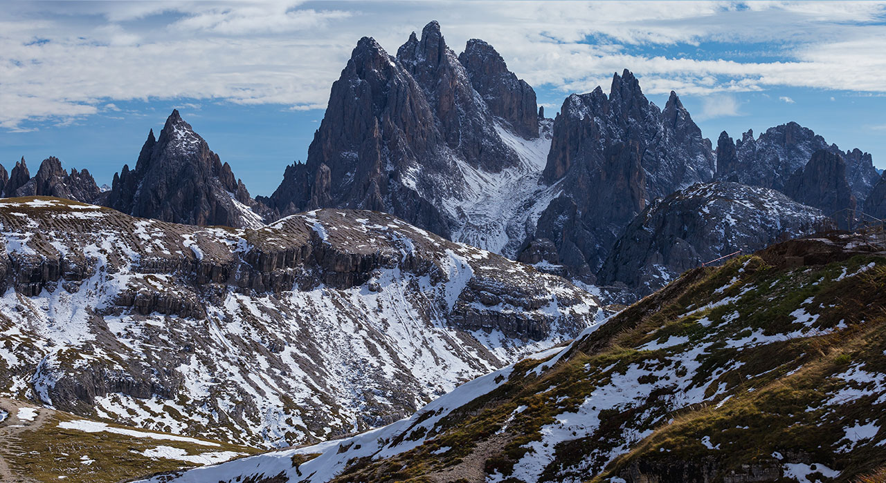

Lugares
Los paisajes de Bariloche
Los paisajes de Bariloche son una verdadera maravilla natural que deja sin aliento a quienes los contemplan. Rodeados de majestuosas montañas, los lagos cristalinos reflejan el cielo y los bosques exuberantes crean un escenario de ensueño. En invierno, las cumbres se visten de blanco con nieve recién caída, mientras que en verano, el verdor y las flores pintan la tierra. Cada estación revela una nueva faceta de su belleza, y la magia de este destino patagónico se convierte en un lienzo perfecto para crear recuerdos imborrables. Explorar los paisajes de Bariloche es descubrir la esencia pura de la naturaleza en su máximo esplendor.